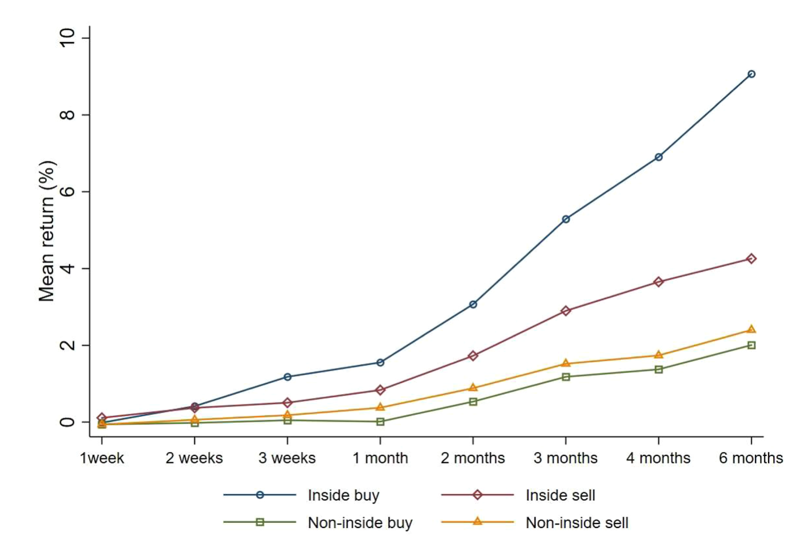
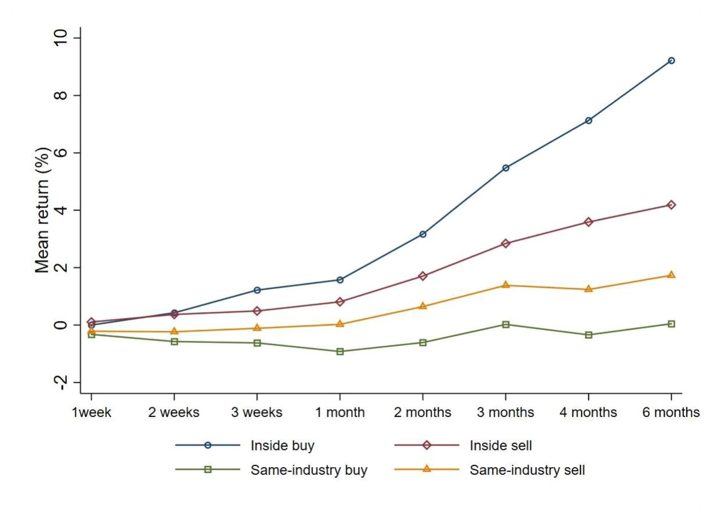
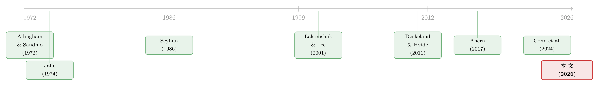

雷达之下：不必申报的高管，在自家股票上赚了多少？
本文读的是 Hvide & Nielsen (2026, Journal of Financial Economics)：监管要求「顶层内部人」公开申报自家股票交易，于是恰好处在这条线之下、不必申报的「执行层以下高管」便飞在了雷达之下。作者用挪威的全口径行政登记数据发现，这群人买入自家股票后，1 个月的异常收益约为 68–101 个基点，6 个月可达约 250 个基点；而他们买入别家股票却是亏的（约 −94 到 −116 个基点）。这道一正一负的剪刀差，几乎只能用一种东西解释——内幕信息。
1 引言：一条线，和线下面的人
几乎所有发达市场都禁止基于内幕信息（material, non-public information）的交易，并且都有一套相似的执行手段。其中最核心的一招，是要求「一类特定的人」把自己在本公司股票上的买卖公开申报。这类人在监管语言里叫做 主要内部人 (primary insider)——在挪威、欧盟乃至美国，指的都是高管团队成员、董事会成员、以及外部审计师。美国的版本是大家熟悉的 Form 4：公司高管、董事和大股东必须在交易后第二个工作日结束前向 SEC 申报。
这条规则的逻辑很朴素：最可能接触到重大非公开信息的，就是公司金字塔尖上那几个人；把他们盯住、让他们的交易暴露在阳光下，市场也就大体安全了。
但任何一条线，都同时定义了「线的另一侧」。
主要内部人之外，是大量不必申报的人。在一家公司里，紧挨着金字塔尖、却又恰好够不到「主要内部人」门槛的，是一批中层高管——生产运营经理、各职能部门负责人。他们离核心决策只有一步之遥，开会、看报表、和同事闲聊，重大信息很可能就这么流到了他们手里。可监管的探照灯偏偏照不到他们。
于是一个很自然、却长期没被正面回答的问题浮出水面：这条门槛划得「对」吗？那些刚好飞在雷达之下的高管，到底有没有在用内幕信息交易、并因此赚到钱？
这正是本文要回答的问题。要回答它，过去几乎是不可能的——因为这些人本来就不申报，你根本看不到他们的交易。作者的破题之处，恰恰在于找到了一套能「看见」这些隐形交易的数据。
2 谁是「执行层以下的高管」
本文用的是挪威的行政登记数据（administrative register data），覆盖 1997 到 2014 年间挪威个人投资者的【全部】股票交易记录，来自挪威中央证券登记机构（Verdipapirsentralen）。这套数据有两个别处难得的好处。
首先，它是全口径的：不是抽样，而是落到个人层面的每一笔买卖——日期、证券代码、股数、以及一个匿名化的个人身份号（相当于美国的社会安全号）。
接着，一个自然的问题是：怎么知道某个交易者在哪家公司、坐什么位置？这就要靠第二样东西——雇主-雇员匹配数据（matched employer-employee data）。挪威统计局用 国际标准职业分类 (ISCO-88) 给每个人的岗位编码。妙就妙在这套编码天然地把「执行层以下」单独切了出来：编码 12（公司经理）下分三档——121（董事与首席执行官，即顶层）、122（生产与运营部门经理）、123（其他部门经理）。作者把 122 和 123 定义为 执行层以下高管 (executives below the top)；首字两位不是 12 的，则归为普通员工 (employees)。
一个值得玩味的细节：ISCO-88 里还有个 131（「总经理」），听上去很大，但文档说明这类人管的是「各种小型企业」，离大公司金字塔尖很远，作者于是把他们也归进员工。在未报告的分析里，这群人确实没有异常收益——和「他们接触不到重大信息」的判断一致。
把交易数据和岗位数据一拼，就能识别出哪些是「自家公司股票」的交易（作者称之为 inside trading），哪些是别家股票的交易。主样本里有约 82,000 笔买入、62,000 笔卖出，总额 235 亿挪威克朗（约 32 亿欧元）。其中买入自家股票约 21,700 笔（占 26%），买入别家股票 60,500 笔（74%）——比起市场总体，这些人的钱明显往自家股票上倾斜。
这里有个绕不开的坑：样本期内不少公司用「股票奖励」(stock awards) 给员工发薪，这些被动获得的股份没有任何择时含义，数据里却没法标记出来。两家石油巨头 Norsk Hydro 与 Statoil（合并后即今天的 Equinor）尤其严重，它们合计约占奥斯陆交易所市值的三分之一，又都是股权激励的先行者。好在这种测量误差只会把异常收益往零的方向拉——也就是说，作者估出来的效应是个【下界】。
3 识别策略：用「同一个人的其他交易」当尺子
测「异常收益」，最大的麻烦从来不是算收益，而是问：跟谁比？
本文沿用 Lyon、Barber 与 Tsai (1999) 的建议，用两种互补的方法来回答这个问题。
第一种是 控制公司法 (control-firm approach)，源自 Barber 与 Lyon (1997)、Døskeland 与 Hvide (2011)：把一笔内幕买入的真实收益，拿去和「在市值、账面市值比 (book-to-market)、过去收益都相近的假想股票」上买入的收益分布相比。第二种是 日历时间组合法 (calendar-time portfolio approach)：按 Carhart (1997) 的四因子模型剥掉市场、规模、价值、动量这四块系统性风险，看残下来的 alpha。此外，他们还吸收了 Cohn 等 (2024) 的新做法，用事件前收益的分布来校正——因为内幕交易往往在公司之间相关，会让日历时间法的标准误被低估。
这些都还只是「技术活」。但真正关键的一步在于第三把尺子。
你也许会反驳：就算这些中层高管买自家股票赚了钱，那会不会只是因为他们本来就是聪明人、天生会选股？毕竟能做到部门经理的人，平均而言不会太笨。这个质疑很要命，因为它正是过去研究顶层高管时甩不掉的阴影——顶层高管个个精英，他们在市场上赚钱，你分不清是靠内幕还是靠能力。
本文的破解办法朴素得近乎优雅：用同一个人的【其他】交易当基准。 如果这些人只是「会投资」，那他们买什么都该赚；可如果他们赚的是自家公司的内幕信息钱，那一旦离开自家股票，这点优势就该消失。于是「买入自家股票」与「同一批人买入别家股票」之间的差，就把「一般选股能力」这个解释干净地隔离了出去。
这正是本文方法论上的核心贡献——它是第一个用这种「个人自身的其他交易」作个体基准，来排除选股能力与行业知识的研究。
4 主要结果：一条向上爬的曲线
结果相当干脆。买入自家股票后，执行层以下高管确实赚到了显著为正的异常收益：1 个月的异常收益，控制公司法给出 68 个基点，日历时间组合法给出 101 个基点。
更耐人寻味的是时间维度。异常收益不是买完一个月就到顶，而是【随持有期不断攀升】——到 6 个月，异常收益已经累积到约 250 个基点。这条向上爬的曲线本身就是一条信息：如果他们只是抢在某条短期消息（比如下周的盈利公告）之前进场，效应应该很快兑现并趋平。持续走高，说明他们买的不只是「即将公布的短期信息」，而是关于公司更长期价值的判断。

Figure 1: Return to trading by executives below the top
5 三个「另类解释」，如何被一一排除
一篇好的实证论文，一半篇幅在亮结果，另一半在堵漏洞。本文最见功力的地方，是把「除了内幕信息，还能怎么解释」的几条路逐一封死。
其一，会不会只是选股能力强？ 前面那把「个人自身基准」的尺子在这里发力：同一批人买入【别家】股票时，1 个月异常收益是 −94（控制公司法）到 −116 个基点（日历时间法）——不仅不赚，还在亏。一个买别人股票都亏钱的人，偏偏一买自家股票就赚，这把「天赋选股」彻底排除了。
其二，会不会是懂行业、而非懂自家公司？ 也许这些人对所在行业有过人的洞察，于是在整条赛道上都能挣钱。作者于是单独看他们买入「同行业但非自家」股票的表现：跨大多数设定，这类交易的异常收益都是【负的且统计显著】。行业知识这条路也走不通。

Figure 2: Return to trading by executives below the top in same-industry
其三，会不会只是反应比市场快（交易的其实是公开信息）？ 这条最微妙。但作者指出，日历时间组合法用的是【月末收盘价】来算收益——若真只是比别人早几小时几天反应一条已经公开的消息，到月末早被市场消化干净了，不可能留下持续的异常收益。
还有一组很说明问题的「安慰剂」：通过自己控股的有限责任公司 (LLC) 间接交易、或借配偶子女账户交易，都很少发生、且【没有】异常收益。换句话说，当他们真要靠内幕信息下注时，用的是【自己的】个人账户——这也从侧面坐实了那点异常收益的来源。
6 反转：越该被盯着的人，反而越规矩
到这里故事已经够完整了。但本文还埋了一个漂亮的反转。
作者顺着 ISCO-88 的阶梯往两头看。往下看普通员工：他们买自家股票也有正的异常收益，但比执行层以下高管要小——离信息源越远，赚得越少，符合直觉。
往上看顶层高管——就是那些【必须申报】的主要内部人：他们买自家股票的 alpha 大体为正，却比执行层以下高管【更小】，而且在多数设定下统计上不显著。
于是反转出现了：最该有信息优势、也最被怀疑的那群人，反倒在自家股票上赚得最少、最不显著。最自然的解释是——他们知道自己被盯着。 探照灯的存在让顶层高管在交易时格外谨慎；而恰恰是那些飞在雷达之下、不必申报的中层，才在毫无顾忌地把信息变成收益。这就把全文的张力收回到了那条「监管划下的线」上：线划在了一个让线下之人有机可乘的位置。
（顺带一提，内幕交易本质上也是一种金融犯罪，而「被发现」的概率正是震慑它的关键——关于事前干预如何压低金融犯罪，可参见《一门高中理财课，能让金融犯罪少三成？》。）
7 一个决策的算计：Allingham–Sandmo 的影子
为什么「被盯着」就会让人收手？本文在附录里给出了一个决策模型，思路上承袭了 Allingham 与 Sandmo (1972) 那篇研究逃税的开山之作。其内核是一道再简单不过的成本-收益权衡，我们把这套逻辑显式地写出来。
设一个人当前财富为 \(W_0\)。若他用内幕信息交易，可获得异常收益 \(g\)；但以概率 \(p\) 被查处，届时要付出罚金 \(F\)（声誉、罚款乃至刑期的折算）。那么「交易」这一行动的期望效用是：
而「不交易」的效用是 \(U(W_0)\)。一个理性的人只在下式成立时才下注：
$$ (1-p)\,U(W_0 + g) + p\,U(W_0 + g - F) \;>\; U(W_0). $$
这道不等式把全文的实证结果串成了一条因果链。它告诉我们，交易与否取决于三个量：收益 \(g\)、被抓概率 \(p\)、罚金 \(F\)。
- 对执行层以下高管：\(g\) 实打实为正（他们确有信息），而 \(p\) 极低（不必申报、飞在雷达之下）。左边轻松压过右边，于是他们交易，且赚到了那
68–101个基点。 - 对顶层高管：信息优势 \(g\) 未必更小，但他们的每一笔交易都要公开申报，\(p\) 高得多。哪怕 \(F\) 不变，被抓概率一抬，不等式就更难成立——理性的反应就是【收手或格外谨慎】。这正对应了数据里顶层高管那个偏小、又不显著的 alpha。
这也是为什么作者反复强调，挪威的估计是个全球意义上的【下界】：挪威 1985 年就立了内幕交易法、1992 年又加严，在透明度与廉洁度上长年排在世界前十（世界银行营商便利度排第 8/190）。换言之，挪威是个 \(p\) 偏高、\(F\) 偏重的地方；连在这里都测出了显著的异常收益，监管更松的市场只会更甚。
8 文献脉络
要看清本文站在哪儿，得把这条线拉长来看。
最早，Jaffe (1974)、Seyhun (1986) 用顶层内部人公开申报的数据发现，内部人的买卖确实预示未来收益。后来人们逐渐看清：真正含正向信息的主要是【买入】，卖出更多是为了流动性或分散化（Lakonishok 与 Lee, 2001；Jeng、Metrick 与 Zeckhauser, 2003）。这一支撑起了「内部人交易能赚钱」的共识——但它有个先天软肋：它只能看见【申报】的人，而申报的人恰恰是最精明、最难分清「能力」与「信息」的那群顶层高管。
与此并行的是两条支线。一条是方法论：Barber 与 Lyon (1997)、Lyon 等 (1999) 把长期异常收益的检验做扎实，Carhart (1997) 提供了四因子基准，直到 Cohn 等 (2024) 还在改进事件研究的推断。另一条是「信息从哪来」：Døskeland 与 Hvide (2011) 发现个人投资者会凭工作经验形成不对称信息；Ahern (2017) 拆解非法内幕交易网络时更发现，里头超过 50 人、约三分之一竟是【中层经理】——线下面的人，早有迹象。

而在挪威本地，Eckbo 与 Smith (1998)、Eckbo 与 Ødegaard (2020) 都曾发现：奥斯陆交易所上【公开申报】的内部人交易并无异常收益。本文恰好补上了这块拼图的另一半——把镜头从「申报的人」转向「不申报的人」，于是看到了被探照灯遗漏的那片暗角。这是文献里第一份关于「刚好够不到门槛」之人的直接证据。
9 评论与延伸（Q&A + 研究方向）
(a) 几个可能的疑问
Q：「执行层以下高管」和「主要内部人」到底差在哪？
差在【是否必须申报】。主要内部人在挪威指高管团队、董事会成员与外部审计师，必须把自家股票交易报给奥斯陆交易所并公开；执行层以下高管是 ISCO-88 里的
122/123（运营与各职能部门经理），离决策只一步之遥，却不在强制申报名单上。本文研究的就是这后一群「线下之人」。
Q：这点异常收益，会不会只是他们会选股？
不会。同一批人买【别家】股票时，1 个月异常收益是
−94到−116个基点，是亏的。一个买别人股票亏钱、买自家股票却赚钱的人，差别只能来自他对自家公司的私有信息，而非普适的选股天赋。
Q：那会不会是「懂行业」而非「懂公司」？
也排除了。他们买入「同行业但非自家」股票的异常收益在多数设定下负且显著。行业洞察若真存在，本该让整条赛道都赚钱，事实却相反。
Q：会不会只是他们反应比市场快、交易的其实是公开信息？
不太可能。日历时间组合法用月末收盘价计收益；若只是抢先几天反应一条已公开的消息，到月末早被市场吸收，留不下持续的、还逐月走高的异常收益。
Q：顶层高管赚得反而少、还不显著，是不是说明他们没信息？
更可能是他们【不敢用】。他们的每笔交易都要申报、被市场和监管盯着，被查处概率高，于是在自家股票上格外克制。这恰恰说明强制申报这道探照灯对它照得到的人是【起作用】的——问题只是它照不到线下的人。
Q：挪威的数字能推广到别处吗？
作者把它当成全球意义上的下界来读。挪威立法早、执法严、透明度高，是个「被抓概率高、罚得重」的环境；连这里都测出显著的内幕收益，监管更宽松的市场只会更明显。
(b) 几个可能的研究问题与提案
1. 把镜头搬到公司债 / 信用市场。 【经济故事】股权内幕交易赚的多是「上行」信息；但中层高管对公司经营恶化、流动性紧张、临近违约这类【下行】信息往往更敏感，而这些信息对债券价格（尤其低评级、高收益债）影响巨大。线下高管会不会在自家公司债、或自家 CDS 上提前避险？信用市场信息更不对称，效应可能比股票更强。 【可行性】中到低。难点在于缺少「个人层面 × 债券持仓」的全口径数据；挪威若能把登记数据延伸到固定收益账户，或可一试，否则需依赖个别经纪商样本。识别上可沿用本文「同一个人的非自家债券交易」做基准。
2. 外资母公司股票 × 跨境员工。 【经济故事】跨国集团的海外子公司中层，对母公司基本面同样握有一手信息，却往往落在母国申报体系的盲区之外。「外资持有人」与「内幕信息跨境流动」交叉，是个几乎空白的角落。 【可行性】中。需要把雇主-雇员匹配数据跨境拼接（如挪威子公司员工 × 外国上市母公司持仓），数据门槛高，但识别逻辑可直接照搬本文的个体基准法。
3. 这些隐形交易对流动性与价格发现的影响。 【经济故事】本文证明线下高管在交易信息，那么把视角从「他们赚多少」转向「市场承受什么」：这些不被申报的知情交易，是恶化了流动性（做市商面对更多逆向选择），还是反而加快了价格发现？ 【可行性】中到高。挪威登记数据可标出这些知情买单，配合奥斯陆交易所的日内报价/价差数据，做事件窗内的流动性与价格冲击分析是 doable 的，识别上可比较「知情买入日」与匹配的非知情日。
4. 晋升与外部招聘前夜的交易。 【经济故事】本文提到一个延伸样本——人们在被外部聘任或晋升【之前】的交易。一个人即将进入某公司决策圈、信息逐渐打开的那段窗口，是观察「信息优势如何随职位生长」的天然实验。 【可行性】高。所需的岗位变动时点本就在雇主-雇员数据里，可用个体固定效应刻画同一人「升职前 vs 升职后」交易表现的变化。
评述者的判断
本文最让我欣赏的，不是它发现了「中层高管也在搞内幕交易」这个略带宿命感的结论，而是它【证明】这一点的方式。用「同一个人买别家股票却在亏钱」来反衬「买自家股票就赚钱」，是我近年读到的最干净的个体基准之一——它把困扰整支内部人交易文献多年的「能力 vs. 信息」之争，用一个再简单不过的对照给釜底抽薪了。再叠加「同行业也亏」「间接账户不赚」「顶层反而克制」这一连串相互印证的旁证，证据链相当扎实。
要说担忧，我有两点。其一是那个无法标记的【股票奖励】问题：作者论证它只会把估计往零拉、因而结论是下界，这在方向上没错，但量级上到底压低了多少，我们其实看不清；若不同岗位获得奖励股的强度系统性不同，跨层比较（员工/中层/顶层）的相对大小就可能被扭曲。其二是【外推性】：挪威是个小而透明、个人持股可被全口径追踪的特例，把 \(p\)（被抓概率）外推到美国这类执法、市场结构都很不同的环境时，需要格外谨慎——本文的「下界」叙事在逻辑上成立，但缺乏一个可比的跨国标尺来钉住它。
我接下来最想看到的，是把这套「个体基准 + 全口径登记数据」的范式搬到信用市场去。股票市场的内幕交易已被研究了半个世纪，而债券、CDS 这些对【下行信息】更敏感的市场里，线下知情人到底在做什么，几乎还是一片处女地。这也是本文真正的价值所在——它示范了一种方法，而方法总比单个结论走得更远。
参考文献
Ahern, K. (2017). Information networks: evidence from illegal insider trading tips. Journal of Financial Economics 125(1), 26–47.
Allingham, M.G., & Sandmo, A. (1972). Income tax evasion: a theoretical analysis. Journal of Public Economics 1(3/4), 323–338.
Barber, B.M., & Lyon, J.D. (1997). Detecting long-run abnormal stock returns: the empirical power and specification of test statistics. Journal of Financial Economics 43(3), 341–372.
Carhart, M.M. (1997). On the persistence in mutual fund performance. Journal of Finance 52(1), 57–82.
Cohn, J.B., Johnson, T., Liu, Z., & Wardlaw, M. (2024). Past is prologue: inference from the cross section of returns around an event. Forthcoming in Journal of Financial Economics.
Døskeland, T., & Hvide, H.K. (2011). Do individual investors have asymmetric information based on work experience? Journal of Finance 66(3), 1011–1041.
Eckbo, B.E., & Smith, D.C. (1998). The conditional performance of insider trades. Journal of Finance 53(2), 467–498.
Jaffe, J.F. (1974). Special information and insider trading. Journal of Business 47(3), 410–428.
Jeng, L., Metrick, A., & Zeckhauser, R. (2003). Estimating the returns to insider trading: a performance-evaluation perspective. Review of Economics and Statistics 85(2), 453–471.
Lakonishok, J., & Lee, I. (2001). Are insiders' trades informative? Review of Financial Studies 14(1), 79–112.
Lyon, J.D., Barber, B.M., & Tsai, C.-L. (1999). Improved methods for tests of long-run abnormal stock returns. Journal of Finance 41(1), 165–201.
Seyhun, H.N. (1986). Insiders' profits, costs of trading, and market efficiency. Journal of Financial Economics 16(2), 189–212.